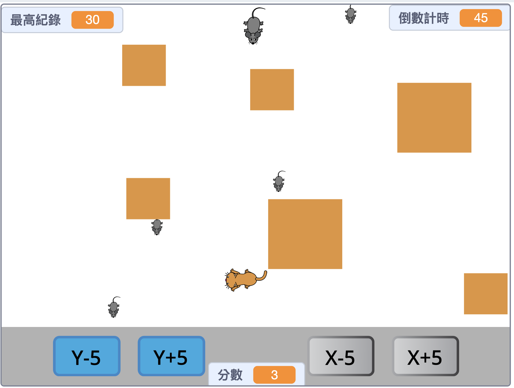
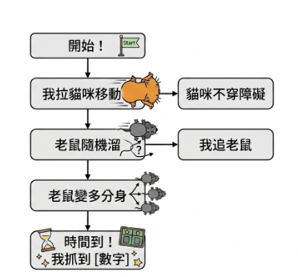
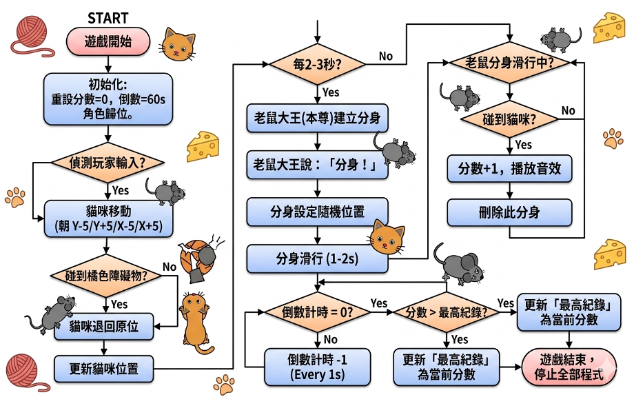
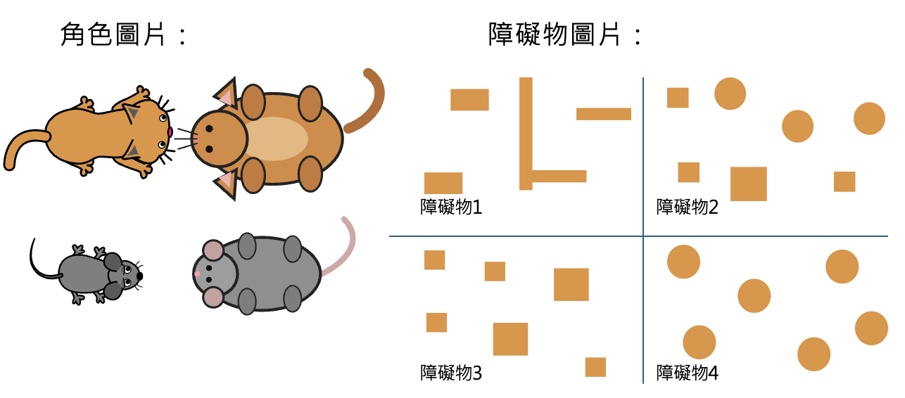

從邏輯思想到遊戲實現的全過程
這是一場驚險的貓抓老鼠大戰！老鼠大王擁有神奇的分身術，可以穿過障礙物逃走；而貓咪玩家必須展現靈敏的反應，在障礙物之間遊走，抓住四處逃竄的老鼠。

倒數計時 雙重操作(鍵盤/按鈕) 碰撞偵測 高分紀錄系統
玩家操控貓咪移動，抓住隨機位置的老鼠來得分。遊戲加入最高得分機制，讓每一次挑戰都更有目標感！
結合了 Scratch 內建資源與 AI 生成的貓鼠俯視圖，加上我自己手繪設計的障礙物圖片，打造出獨一無二的關卡體驗。
在動手寫程式前，我先規劃了遊戲的邏輯。從簡單的步驟到複雜的判斷邏輯：
【遊戲如何進行】

【詳細機制拆解】

【素材】
